はじめに
美容室で「おまかせで」って言ってないか？
あるいは、SNSで見つけた髪型の画像を見せても「なんか思ってたんと違うな」で終わってないか？
これな、センスの問題じゃないんですよ。自分の顔型と印象に合ってないスタイルを選んでるだけ。
このプレゼントは、あなたの顔型を診断して、似合うスタイルと、そのまま美容院で見せればオーダーできる文言を全部まとめたもの。
このプレゼントを読んで、スマホのスクショだけ撮って、そのまま美容室に行ってほしい。それだけで、仕上がりがガラッと変わる。
STEP 1：顔型を判定する
まず鏡の前で前髪を上げて、顔の縦と横の長さを測ってほしい。
- 縦＝おでこの生え際から顎の先まで
- 横＝頬骨の一番出てるところの幅
この比率で判定する。
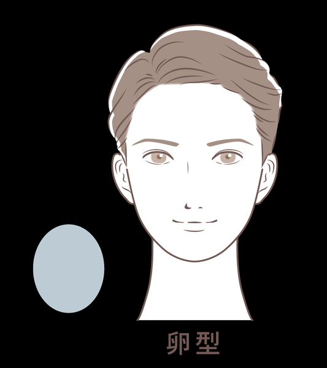
どんな髪型も似合う
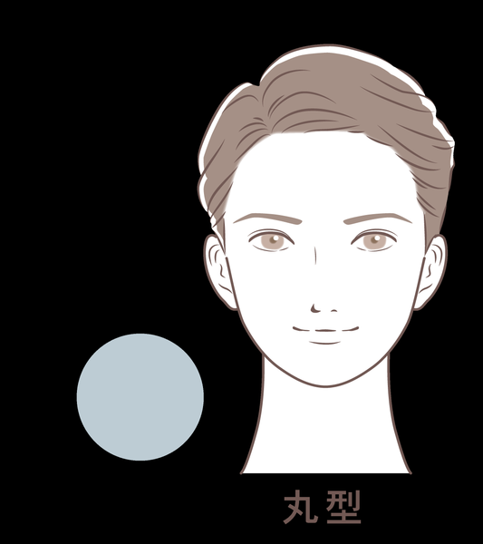
縦のラインを強調
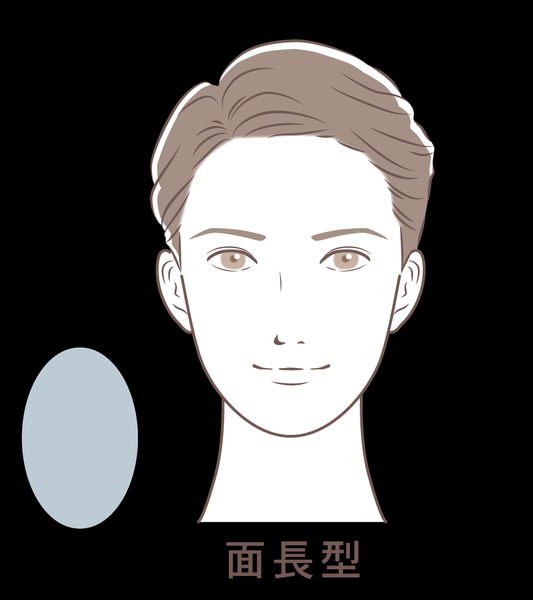
横にボリュームを
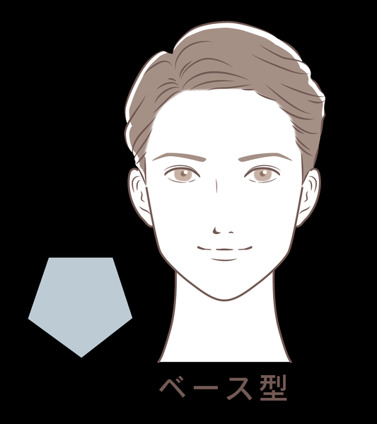
柔らかい印象に
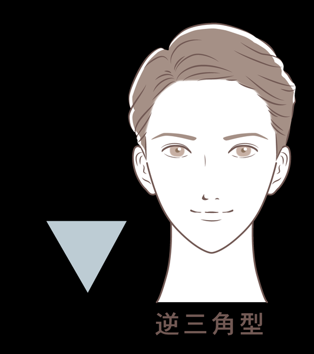
何でも似合う
| 顔型 | 判定 |
|---|---|
| 卵型 | 縦と横がほぼ1:1 |
| 丸顔 | 横が縦より長い |
| 面長 | 縦が横より長い |
| ベース型 | 横幅がかなり広くてエラが張ってる |
| 逆三角形 | 1:1だが顎がシュッと尖ってる |
STEP 2：印象タイプを判定する
顔型だけじゃなくて、顔の「印象」も大事。下の2軸で判定する。
子供顔 vs 大人顔
- ①顔の輪郭：丸っこい→A、縦に長い→B
- ②顎：短くて丸い→A、長くてシャープ→B
- ③目の位置：顔の真ん中より下→A、真ん中か上→B
Aが多い→子供顔、Bが多い→大人顔
かわいい系 vs かっこいい系
- ①目の形：丸い→A、切れ長→B
- ②頬：ふっくら丸み→A、骨っぽく角張ってる→B
- ③眉の形：カーブしたアーチ型→A、直線的で角張ってる→B
Aが多い→かわいい系、Bが多い→かっこいい系
4タイプの参考芸能人
| タイプ | 参考芸能人 |
|---|---|
| 子供顔 × かわいい系 | 千葉雄大 |
| 子供顔 × かっこいい系 | 山田涼介 |
| 大人顔 × かわいい系 | 市原隼人 |
| 大人顔 × かっこいい系 | 阿部寛（線形が多い、ゴツゴツ） |
STEP 3：おでこの広さをチェック
スタイルによってはおでこの広さで分岐する。広い／普通／狭いのどれか把握しておいて。
【面長】の人に似合うスタイル
おすすめ：横ボリュームのあるマッシュ / ちょい上げセンターパート / パーマ
NG：前髪完全に上げるアップバング、サイド刈り上げツーブロック
参考芸能人：佐藤健、坂口健太郎
ポイントは、耳出さない方がいい。前髪下ろしが一番似合う。サイド1cm以上被せる。
① ラウンドマッシュ（かっこいい大人）
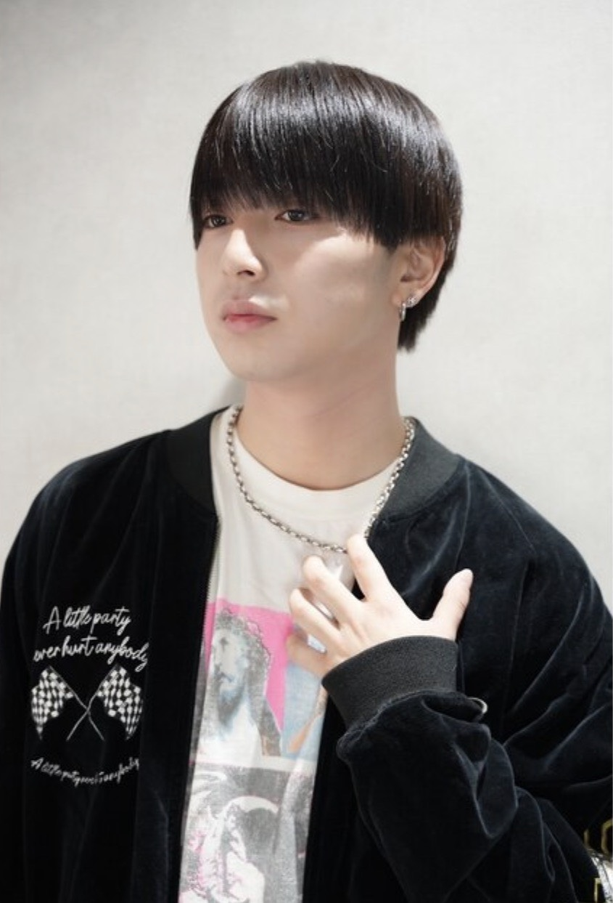
② スパイキーショート（かっこいい大人）
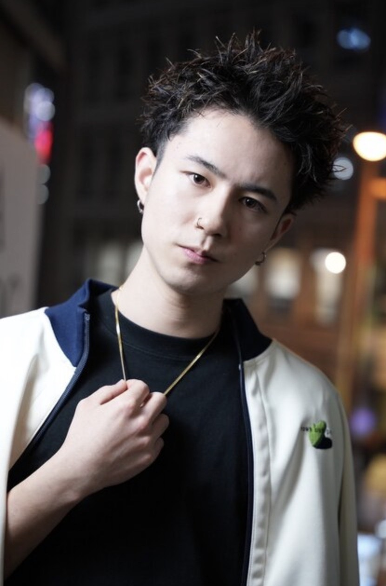
注意：おでこ広い人は前髪短くすると強調されるのでバランス見て切る
③ シースルマッシュ（かわいい子供）
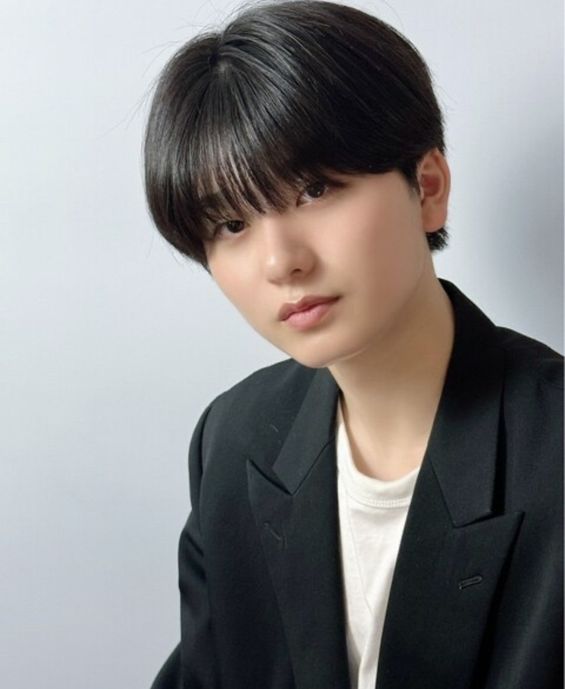
注意：おでこ広い人はシースルではなく通常の前髪カットにし、スタイリングでシースル風にする
④ センターパート（かわいい大人）
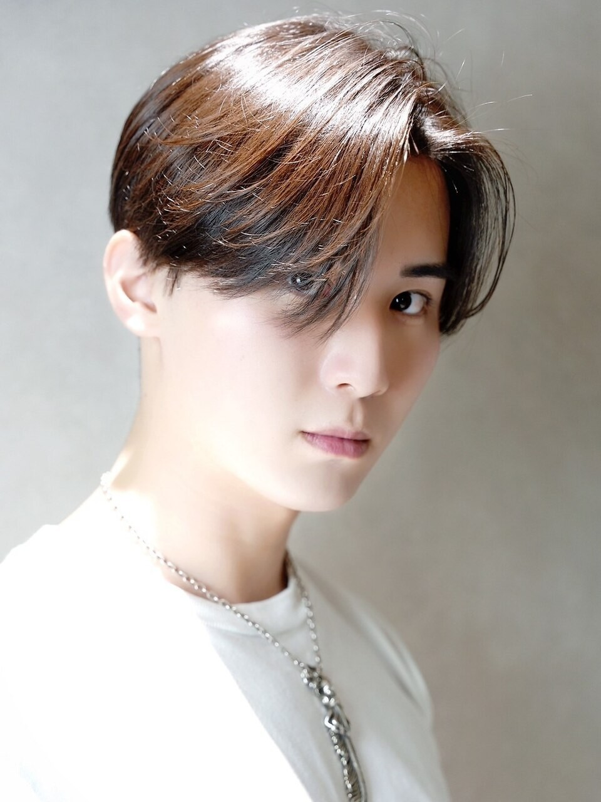
【丸顔】の人に似合うスタイル
おすすめ：韓国風マッシュ（サイド絞る）/ トップ高めセンターパート / ひし形シルエットマッシュ / アップバング
NG：サイドに重めボリュームのスタイル、スパイキーショート、丸みマッシュ、コンマバング
ポイントは、もみあげを伸ばさない。横はツーブロックでボリューム下げる。トップに高さを出す。耳を出す。
カット時の注意：丸みをつけてカットすると丸みが強くなるので、角は残さないか頭のサイドを削るようにオーダー。
① ショートマッシュ＋無造作パーマ（かっこいい子供）
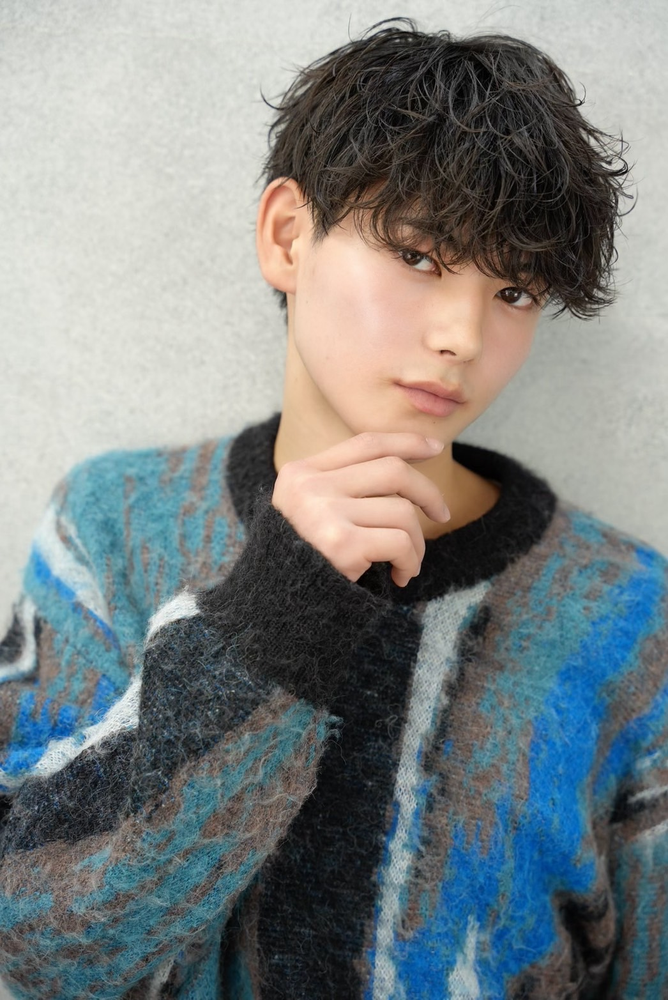
② アップバング（かっこいい大人）
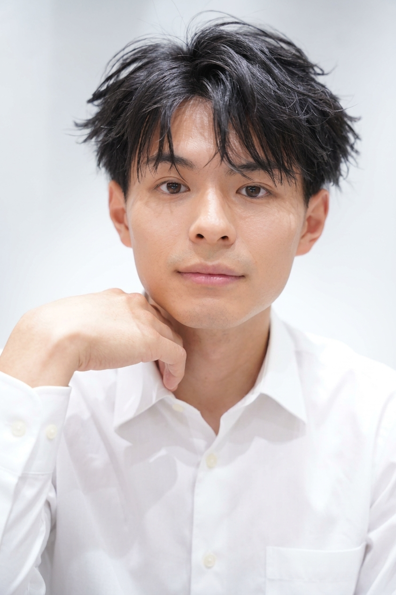
③ コンマフェザー（かわいい大人）
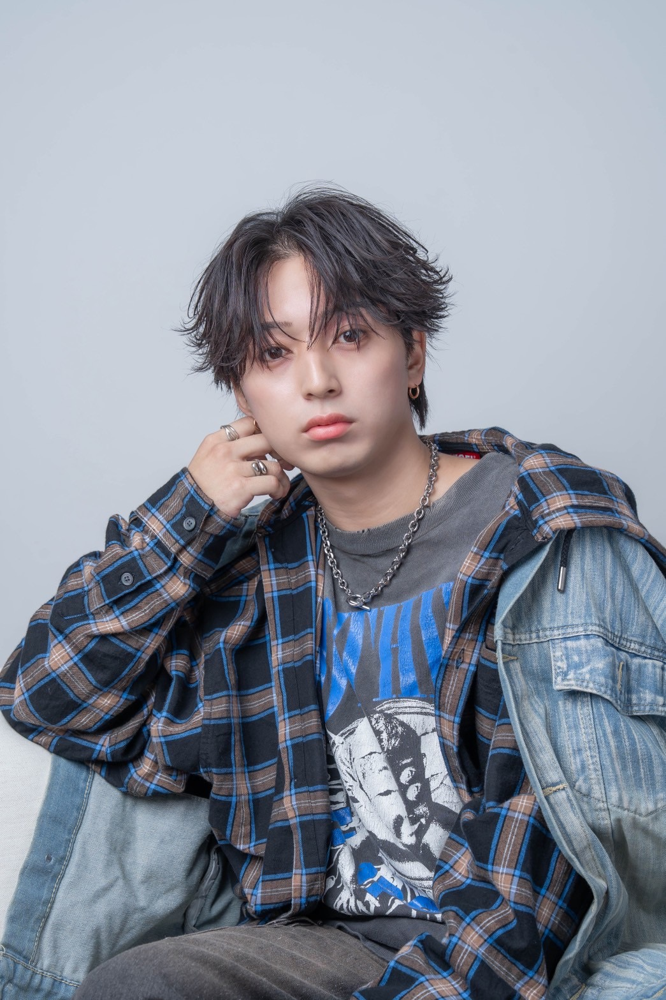
④ シースルマッシュ（かわいい子供）
【卵型】の人に似合うスタイル
童顔中性的 → マッシュ、カール系パーマ
大人男っぽい → センターパート、ショート
おでこの広さで分岐あり（広い人はシースルーマッシュNG、トップ切りすぎると前髪透ける）。
① 王道ウルフマッシュ（かっこいい子供）
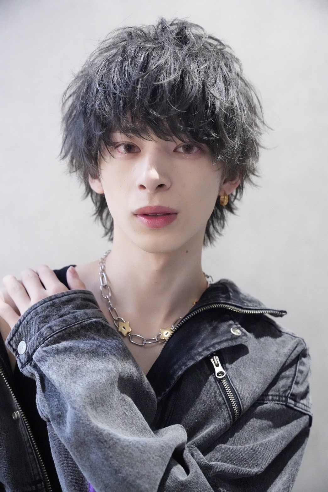
② 耳掛けセンターパート（かっこいい大人）
③ 波巻きセンターパート（かわいい子供）
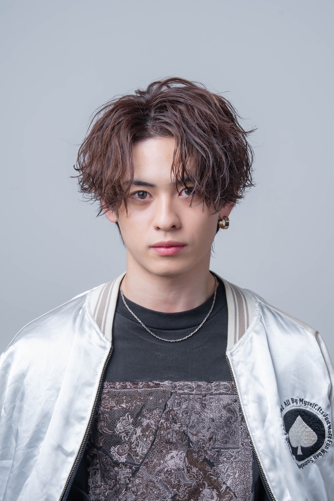
④ アップバングショート（かわいい大人）
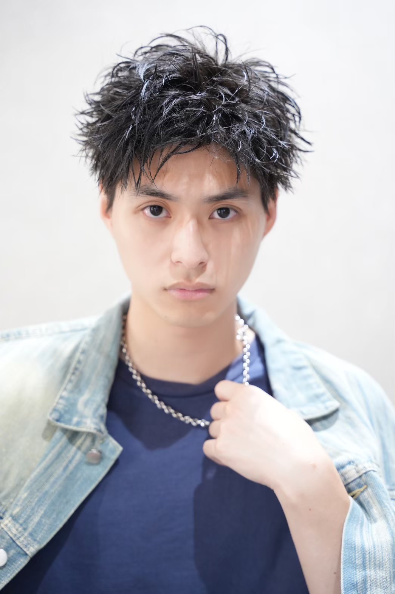
【ベース型】の人に似合うスタイル
おすすめ：ナチュラルマッシュ（丸み）/ 緩めスパイラルパーマ / ナチュラルセンターパート / Vマッシュ系
- もみあげ・顔周りの髪を長めに残してエラを隠す
- センターパート → 頬骨下くらいの前下がりベースが似合う
- 刈り上げはしない方がいい。少し襟足見えるくらいが良い
- 男らしい顔 → 逆にアップバング・ジェットモヒカンで活かすのもアリ
- 骨骨しいからパーマを当てると柔らかさが出る
【逆三角形】の人に似合うスタイル
注意：トップにボリューム出しすぎない。刈り上げはしない方がいい
- マッシュかセンターパートがベター
- 短髪ならアップバング
- 柔らかくしたいなら緩めパーマ
- 似合いにくい：ジェットモヒカン、スパイキーショート
ミックス顔型の対応
面長 × ベース型ミックス
- トップに高さを出さない
- 短髪系はベースが際立つのでNG
- シースルマッシュや重すぎないマッシュで骨格補正
面長 × 逆三角形ミックス
- トップに高さ出しすぎると顎が細く見える
- トップはナチュラルに。下に重心を持ってくる
- シースルマッシュやセンターパートで顎の長さをカバー
パーマの判断基準
| 顔型 × スタイル | おすすめパーマ |
|---|---|
| 面長 × マッシュ or センターパート | 波巻きパーマ（横にボリューム出やすく骨格補正） |
| 面長 × アップバング | 自立しないツイスパ（トップやサイドにボリューム作りやすい） |
| 面長 × スパイキーショート | ツイストパーマ or ワンカールパーマ |
| ベース型 | パーマで柔らかさを出すと骨格の角張り中和 |
| 逆三角形 | 柔らかくしたいなら緩めパーマ |
美容院でのオーダーのコツ
- 事前にメモにまとめていく。その場で伝えると漏れる
- 自分が好きな雰囲気の写真を用意する。言葉より画像で伝えるのが確実
- 160cm前後の人は重たく見せすぎない。トップに高さ、サイドの広がりを抑える
- 初めての美容院は、必ず試しに行ってから本番（カット＋カラー等）を予約する
最後に
髪型一つで、顔の印象はマジで変わる。
このプレゼントを美容室で見せて、「この通りに切ってください」って言えばいい。それだけで失敗しない。
自分の顔に合った髪型は、一番コスパのいい男磨きやから。
リョータ